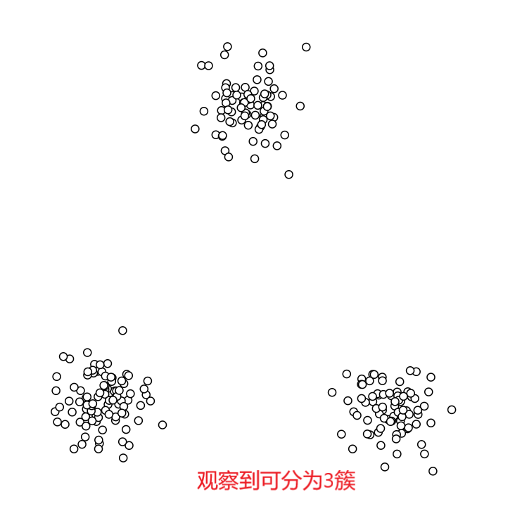
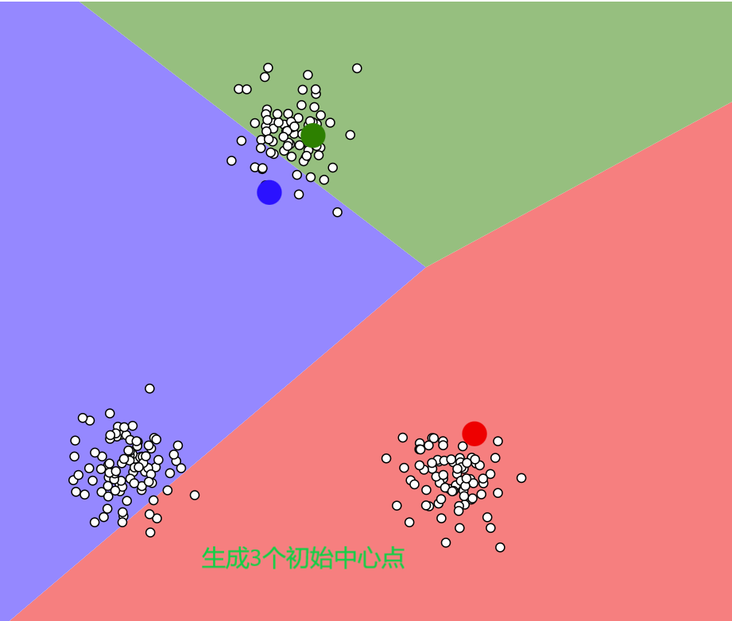
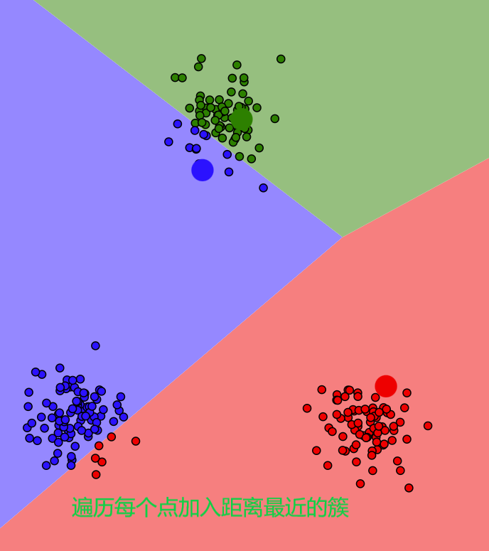
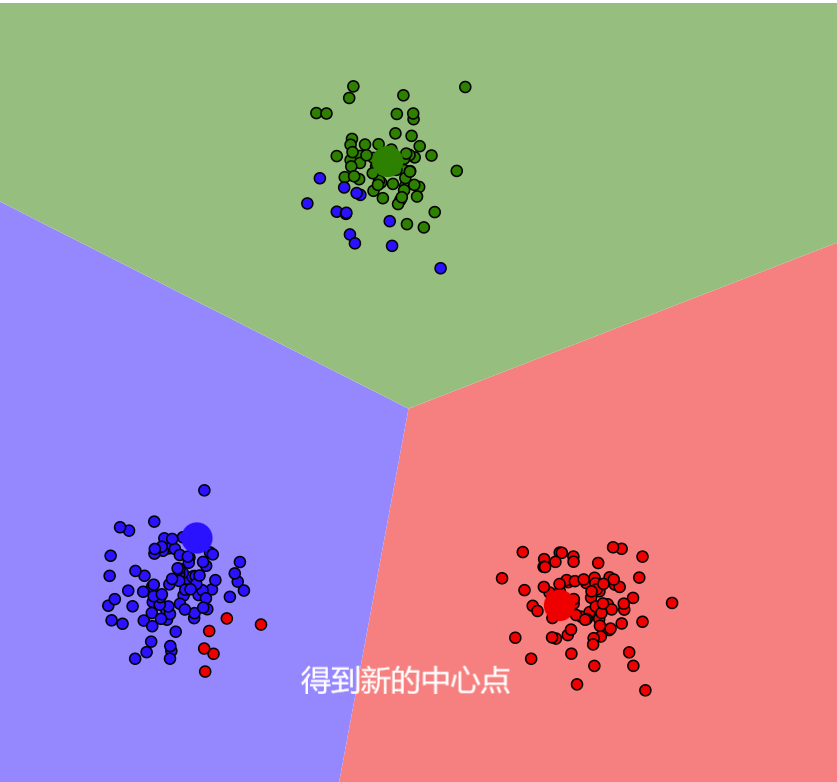
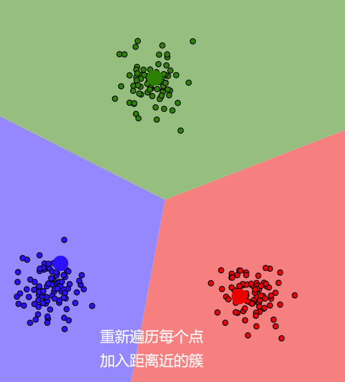
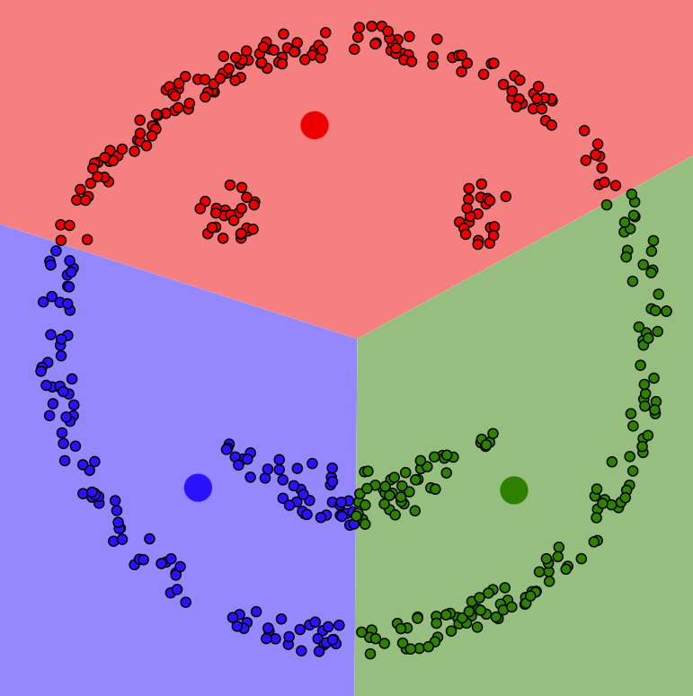
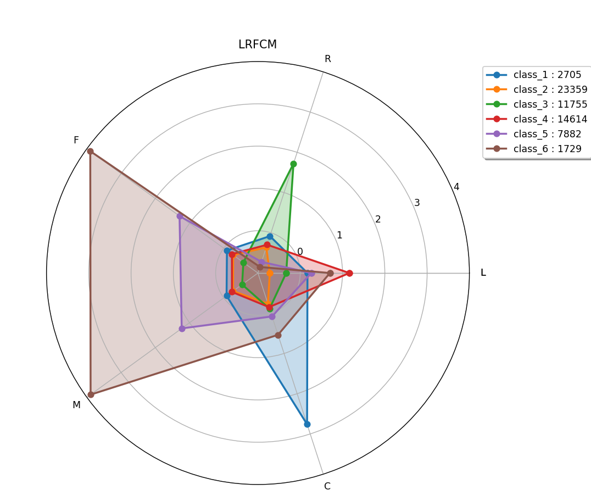

航空公司客户价值分析
原理分析
在市场竞争上，对于航空公司而言，需要航空公司对客户进行竞争。这就需要航空公司对用户进行分类，得到用户的用户价值，从而有针对性地对用户投放资源。
RFM模型
RFM模型是利用通用交易环节中最核心的三个维度——最近消费(Recency)、消费频率(Frequency)、消费金额(Monetary)细分客户群体，从而分析不同群体的客户价值。
LRFCM模型
RPM模型并不适合所有行业，那么就需要在RFM模型的基础上添加指标以提高模型更高的拟合度。添加2个指标用于客户分群与价值分析，得到航空行业的LRFMC模型：
- L：入会时间距观测窗口结束的月数(可能的活跃时长) = 观测窗口结束时间 - 入会时间 = LOAD_TIME - FFP_DATE
- R：客户最近一次乘坐公司飞机距观测窗口结束的月数(当前活跃状态) = LAST_TO_END
- F：客户在观测窗口内乘坐公司飞机的次数 = FLIGHT_COUNT
- M：客户在观测窗口内累计的飞行里程(依赖性) = SEG_KM_SUM
- C：客户在观测窗口内折扣系数的平均值(客户价值) = avg_discount
K-Means聚类算法
K-Means聚类算法是一种无监督学习方法。聚类算法能够找到不同数据之间的相似性，将数据集分割成不同的类或簇。
K-Means聚类算法的主要步骤是：
- 首先要事先确定划分的簇数K，并随机生成每个簇的中心点。
- 遍历数据集中的每个数据，计算其到K个簇中心点的欧几里得距离取最小者，将该数据加入该中心点所代表的簇中。
- 当簇中加入了数据，此时便能够更新K个簇的中心位置。
- 当更新完毕中心位置之后，重复步骤2.
对于理解该算法的一个可视化过程如下：





该过程源自网站：https://www.naftaliharris.com/blog/visualizing-k-means-clustering/
我们可以看到K-Means算法需要我们预先设定K值，对于较为复杂的数据该算法表现差强人意，如图

且中心点初值的选择也会影响最终的结果，这里我们会进行多次计算求平均值。
我们还需要一个标准来衡量聚类结果的好坏以及在不能直观判断数据的簇数K时，如何选择K值。
肘部法
根据评价指标inertia_，该指标表示每个样本点到其所在簇中心的距离之和。inertia_值越小则表示聚类效果越好。但当K值不断增大时，inertia_也必然减小，这是因为簇数增多，必将不断细分样本，样本点到簇中心的距离之和必然减小。因此我们可以找寻一个拐点，在该点之前inertia_减小得较快，在该点之后inertia_减小得较慢。
轮廓系数法
轮廓系数silhouette_score，该指标用于表示同一个聚类内部的样本密集，不同聚类之间样本疏远的程度。轮廓系数结合了内聚度和分离度两个因素，其公式如下： $$ s(i)=\frac{b(i)-a(i)}{max(a(i),b(i))} $$ 其中a(i)表示样本点i到同簇其他样本点距离的平均值，b(i)表示样本点i到其他簇所有点平均距离的最小值。
取值范围为[-1, 1]，越靠近1表示聚类效果越好，接近0代表样本i处在两个簇的边界上，越接近-1表示样本i分类错误。
也就是说我们需要找到一个较为大的silhouette_score下的K值。
数据清洗
在进行聚类之前，需要对数据进行清洗。对于一些重要的的数据，需要判断其是否有缺失，有缺失，将数据舍弃。再判断是否有异常数据，将异常数据删除后才可用来聚类训练。
# 去除票价为空的记录
exp1 = airline_data["SUM_YR_1"].notnull() # 返回布尔值
exp2 = airline_data["SUM_YR_2"].notnull()
exp = exp1 & exp2 # &是逻辑与运算符，合并结果
print('exp的形状是：', exp.shape)
airline_notnull = airline_data.loc[exp, :]
# loc是基于行标签和列标签（x_label、y_label）进行索引
# loc[exp, :]表示选取exp为True的行，所有列
print('删除缺失记录后数据的形状为：', airline_notnull.shape)
# 只保留票价非零的，或者平均折扣率不为0且总飞行公里数大于0的记录。
index1 = airline_notnull['SUM_YR_1'] != 0
index2 = airline_notnull['SUM_YR_2'] != 0
index3 = (airline_notnull['SEG_KM_SUM'] > 0) & \
(airline_notnull['avg_discount'] != 0)
airline = airline_notnull[(index1 | index2) & index3]
print('删除异常记录后数据的形状为：', airline.shape)
建立RFM和LRFCM模型数据
选取和构造对应特征的变量并加以储存成.npz格式
K-Means算法
在scikit learn库中提供了K-Means聚类算法的相关方法。
from sklearn.cluster import KMeans
# n_clusters参数表示分成的簇数，需要传入；n_init参数表示用不同的初始化质心运行算法的次数，最后根据inertia_确立最好的结果；random_state为随机数种子
kmeans_model = KMeans(n_clusters=k, n_init=5, random_state=123)
fit_kmeans = kmeans_model.fit(airline_scale)
确立K值
通过肘部法和轮廓系数法绘制出对应图像，根据图像特点选择较为合适的K值。这里我将计算K取[2,10)聚类的结果进行比较：
from sklearn.metrics import silhouette_score
K = range(2, 10)
sse_result = []
silhouette_result = []
for k in K:
kmeans, s = K_means(k, method)
# cdist计算每个样本到聚类中心的距离，取最小值并求和，再除以样本数
# euclidean用于计算欧几里得距离
# sse_result.append(sum(np.min(cdist(s, kmeans.cluster_centers_, 'euclidean'), axis=1)) / s.shape[0])
# .inertia_能够直接计算出sse的值
sse_result.append(kmeans.inertia_)
# 轮廓系数法选择k值
silhouette_result.append(silhouette_score(s, kmeans.labels_, metric='euclidean'))
silhouette_score可以通过sklearn提供的方法计算得出，但数据较大，得到结果所需时间较长，因此将结果保存到文件中。
np.savez('../tmp/sse_silhouette_result_' + method + '.npz', sse_result, silhouette_result)
之后再读取文件内容绘制SSE-K图和silhouette_score-K图。
制定营销策略
得到雷达图如图所示。

将客户分为四类制图如下：
| 客户群 | 会员时长L | 最近乘机R | 乘机次数F | 飞行里程M | 平均折扣C |
|---|---|---|---|---|---|
| class_1 | ⭐⭐ | ⭐ | ⭐ | ⭐ | ⭐⭐⭐⭐ |
| class_2 | ⭐ | ⭐ | ⭐ | ⭐ | ⭐ |
| class_3 | ⭐ | ⭐⭐⭐ | ⭐ | ⭐ | ⭐ |
| class_4 | ⭐⭐⭐ | ⭐ | ⭐ | ⭐ | ⭐ |
| class_5 | ⭐⭐ | ⭐ | ⭐⭐⭐ | ⭐⭐⭐ | ⭐⭐ |
| class_6 | ⭐⭐ | ⭐ | ⭐⭐⭐⭐⭐ | ⭐⭐⭐⭐⭐ | ⭐⭐ |
class_1：该群体入会时间较长享受平均折扣高.
class_2：该群体入会时间短，最近乘机时间距今较短，乘机次数少，飞行里程短，平均折扣低，群体人数也最大，属于大众客户。需要航空公司在资源有余且允许的情况下加大投入。
class_3：该最近乘机时间据今较长，但乘机次数少，此类用户占比也较大，与大众客户类似，但最近并没有消费，公司应该给予较高优惠挽留客户。
class_4：该群体入会时间长，最近乘机时间距今较短，乘机次数少，飞行里程短，此类客户可能属于已流失客户。
class_5：该群体入会时间较长，最近乘机时间距今较短，乘机次数较多，但折扣较低，此类用户有很大发展潜力，航空公司应该给予较大资源倾斜，提高用户粘性。
class_6：该群体入会时间较长，最近乘机时间距今较短，乘机次数多，飞行里程长，但折扣较低，此类用户消费频繁，航空公司保持这类用户，提高用户粘性。
具体代码可见后续更新……